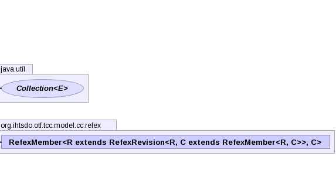

- java.lang.Object
-
- java.util.AbstractCollection<E>
-
- java.util.AbstractSet<E>
-
- java.util.concurrent.ConcurrentSkipListSet<RefexMember<?,?>>
-
- org.ihtsdo.otf.tcc.model.cc.concept.ConceptDataManager.AddMemberSet
-
- All Implemented Interfaces:
- Serializable, Cloneable, Iterable<RefexMember<?,?>>, Collection<RefexMember<?,?>>, NavigableSet<RefexMember<?,?>>, Set<RefexMember<?,?>>, SortedSet<RefexMember<?,?>>
- Enclosing class:
- ConceptDataManager
public class ConceptDataManager.AddMemberSet extends ConcurrentSkipListSet<RefexMember<?,?>>
- See Also:
- Serialized Form
-
 
-
-
Constructor Summary
Constructors Constructor and Description ConceptDataManager.AddMemberSet(Collection<? extends RefexMember<?,?>> c)
-
Method Summary
Methods Modifier and Type Method and Description booleanadd(RefexMember<?,?> e)booleanaddDirect(RefexMember<?,?> e)-
Methods inherited from class java.util.concurrent.ConcurrentSkipListSet
ceiling, clear, clone, comparator, contains, descendingIterator, descendingSet, equals, first, floor, headSet, headSet, higher, isEmpty, iterator, last, lower, pollFirst, pollLast, remove, removeAll, size, subSet, subSet, tailSet, tailSet
-
Methods inherited from class java.util.AbstractSet
hashCode
-
Methods inherited from class java.util.AbstractCollection
addAll, containsAll, retainAll, toArray, toArray, toString
-
-
-
-
Constructor Detail
-
ConceptDataManager.AddMemberSet
public ConceptDataManager.AddMemberSet(Collection<? extends RefexMember<?,?>> c)
-
-
Method Detail
-
add
public boolean add(RefexMember<?,?> e)
- Specified by:
addin interfaceCollection<RefexMember<?,?>>- Specified by:
addin interfaceSet<RefexMember<?,?>>- Overrides:
addin classConcurrentSkipListSet<RefexMember<?,?>>
-
addDirect
public final boolean addDirect(RefexMember<?,?> e)
-
-